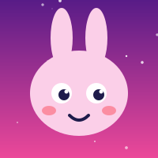

About
Games, worlds
and good vibes.
Our Story
NOVAFORGE is a game and interactive studio built by Nurjamal — a developer who loves turning ideas into things you can click, play and explore. It started with small browser projects: an interactive web experience, a chatbot and a Battleship game, all open on GitHub.

Meet the maker

Nurjamal
Developer and creative behind NOVAFORGE. Loves games, clean interfaces and details that make a project feel premium. Likes to build the whole thing — idea, design, code and polish — and to keep clients in the loop at every step.
Development Process
- Discovery
- Planning
- Design
- Development
- Testing
- Release